You’re Invited
to our wedding
01 / THE BEGINNING
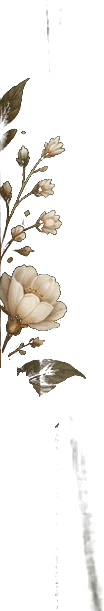
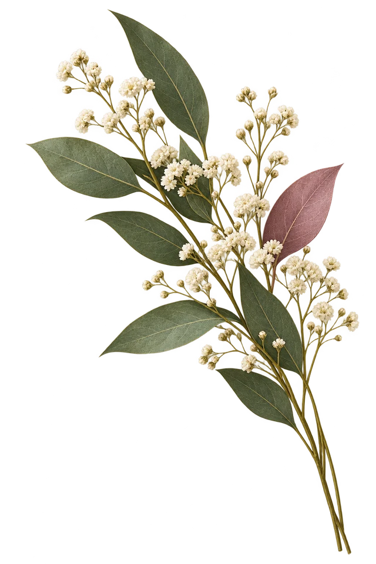
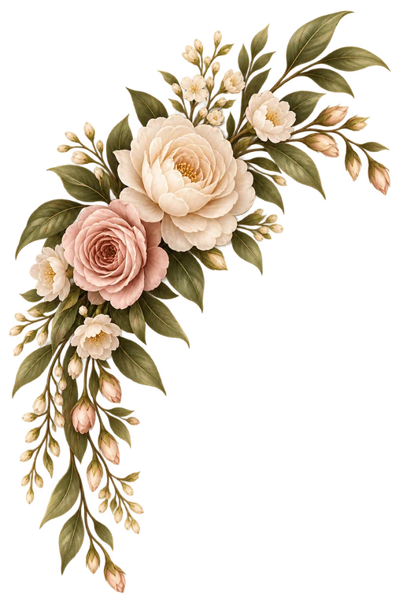
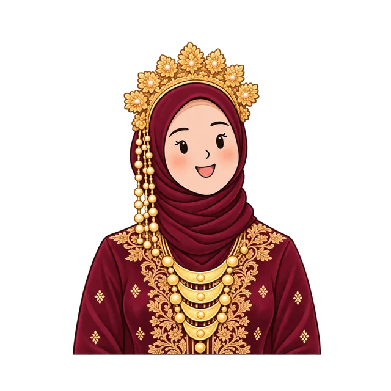
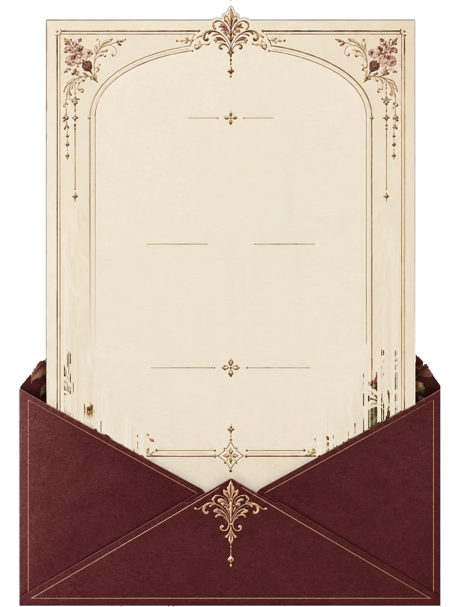
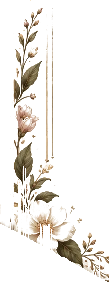
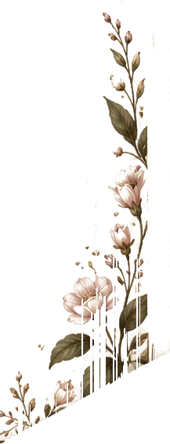
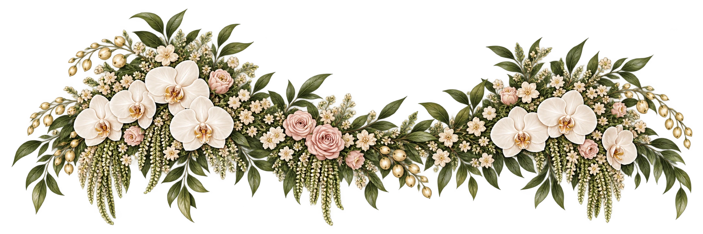
The Wedding of
Fifi
&Arul
26 Desember 2026
02 / WRITTEN BY HIS WILL
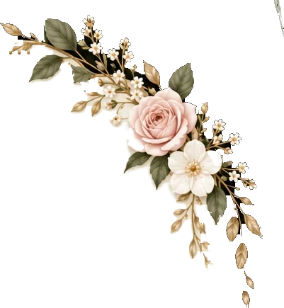
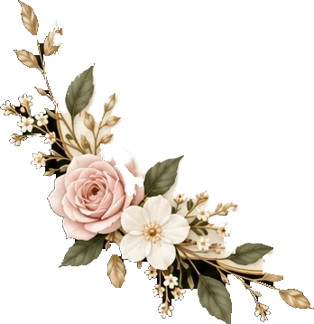
IN HIS PERFECT PLAN
QS. Ar-Rum: 21
وَمِنْ اٰيٰتِهٖٓ اَنْ خَلَقَ لَكُمْ مِّنْ اَنْفُسِكُمْ اَزْوَاجًا لِّتَسْكُنُوْٓا اِلَيْهَا وَجَعَلَ بَيْنَكُمْ مَّوَدَّةً وَّرَحْمَةً ۗ اِنَّ فِيْ ذٰلِكَ لَاٰيٰتٍ لِّقَوْمٍ يَّتَفَكَّرُوْنَ ٢١
Di antara tanda-tanda (kebesaran)-Nya ialah bahwa Dia menciptakan pasangan-pasangan untukmu dari (jenis) dirimu sendiri agar kamu merasa tenteram kepadanya. Dia menjadikan di antaramu rasa cinta dan kasih sayang. Sesungguhnya pada yang demikian itu benar-benar terdapat tanda-tanda (kebesaran Allah) bagi kaum yang berpikir.
03 / TWO HEARTS, ONE STORY
Bismillahirrahmanirrahim
Assalamu’alaikum Warahmatullahi Wabarakatuh
Anak Daro
Marapulai
04 / A DAY TO REMEMBER
Save the Date
Desember 2026
| Sen | Sel | Rab | Kam | Jum | Sab | Min |
|---|---|---|---|---|---|---|
THE START OF OUR FOREVER
Menanti hari bahagia kami.
05 / COME CELEBRATE WITH US
YOU ARE PART OF OUR STORY
The Celebration
Baralek
Resepsi Pernikahan
Sabtu, 26 Desember 2026
Pukul [JAM MULAI]–[JAM SELESAI] WIB
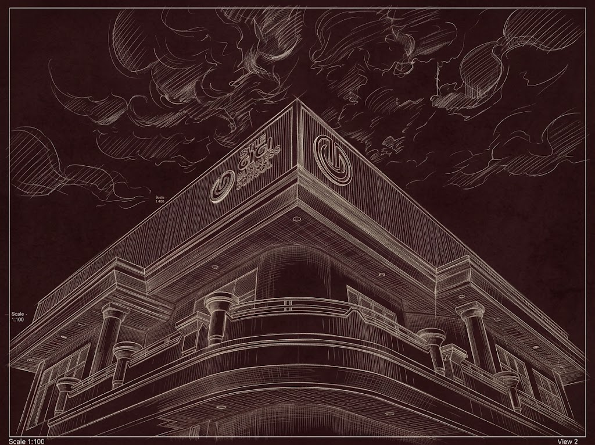
[Nama Venue]
[Alamat Lengkap]
LiveSiaran Langsung
Tonton Siaran Langsung06 / LITTLE MOMENTS, BIG LOVE
Our Moments
A few moments, a lifetime of meaning.
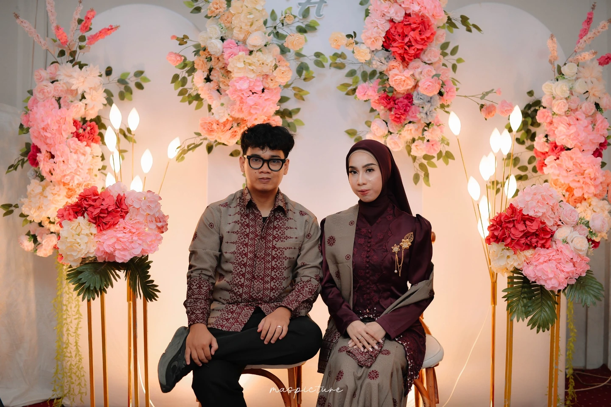
Foto 1 — Pasangan duduk berdampingan di antara dekorasi bunga pink dan putih. 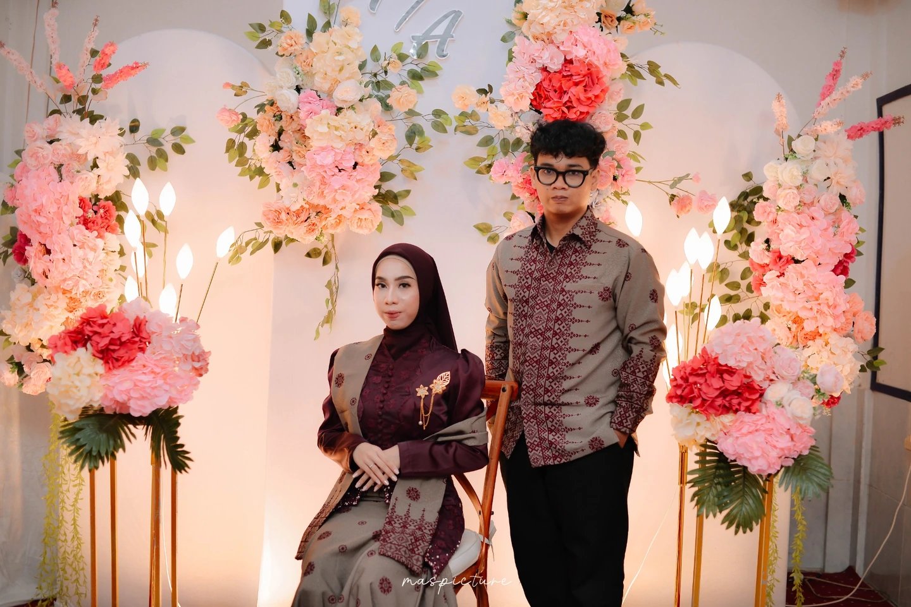
Foto 2 — Mempelai wanita duduk dan mempelai pria berdiri di sampingnya. 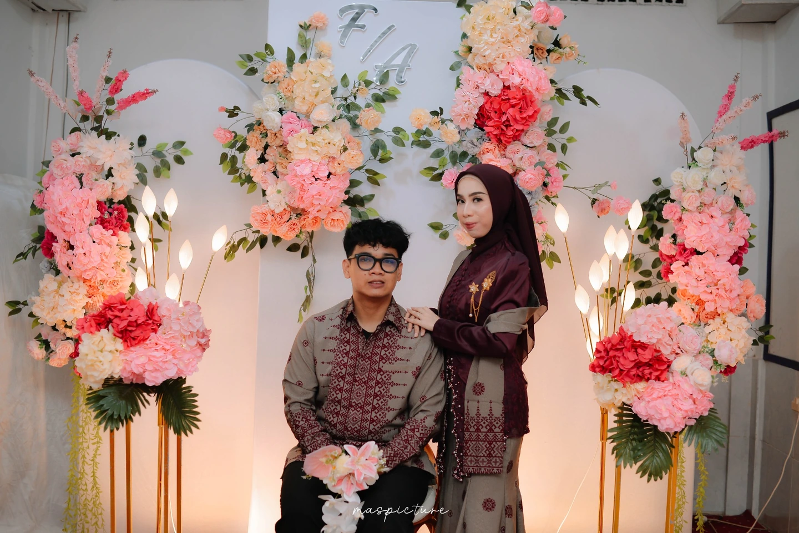
Foto 3 — Mempelai pria duduk dengan buket, mempelai wanita berdiri di sampingnya. 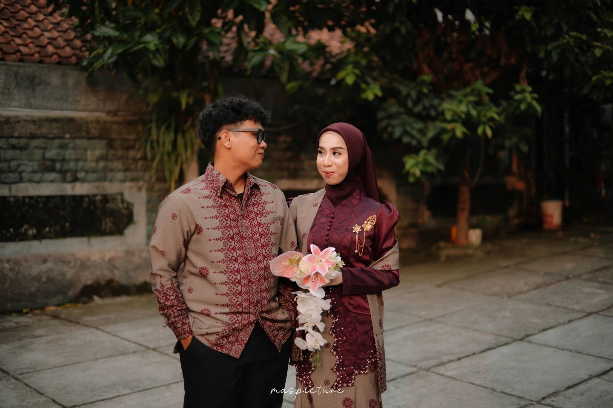
Foto 4 — Pasangan saling memandang sambil membawa buket bunga di taman. 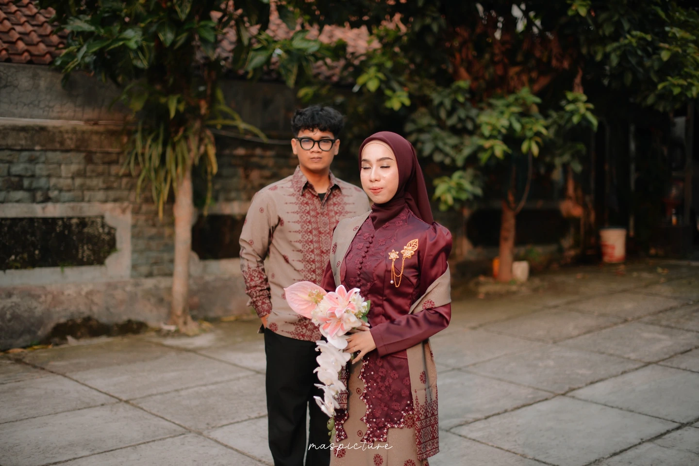
Foto 5 — Mempelai wanita membawa buket dengan mempelai pria berdiri di belakangnya di taman. 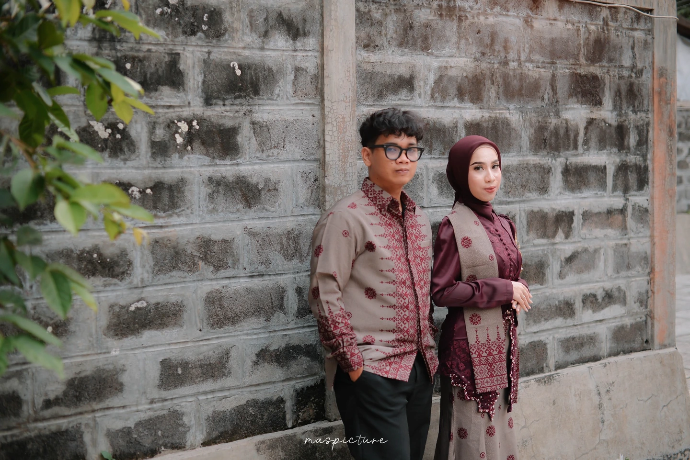
Foto 6 — Pasangan berpose di samping dinding batu dan tanaman hijau. 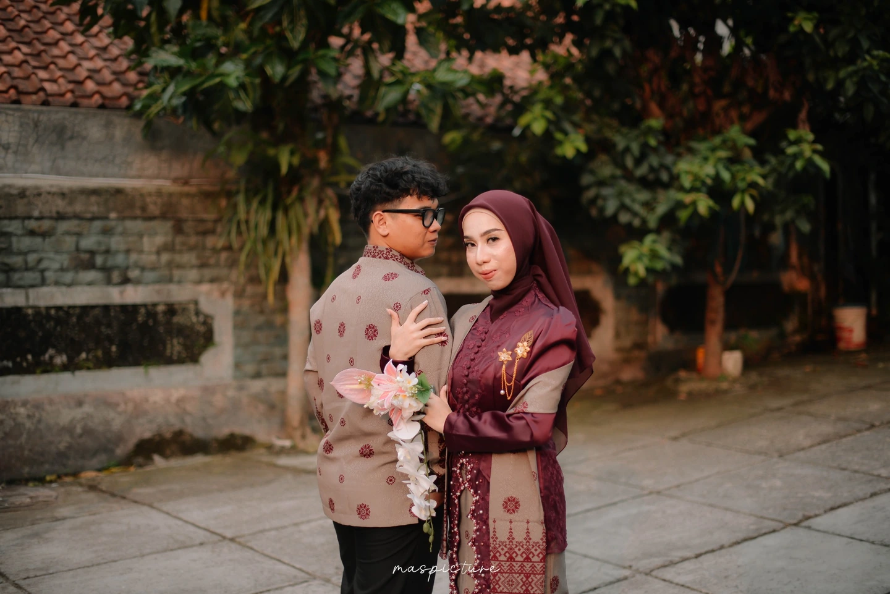
Foto 7 — Pasangan berpelukan dengan buket bunga di taman. 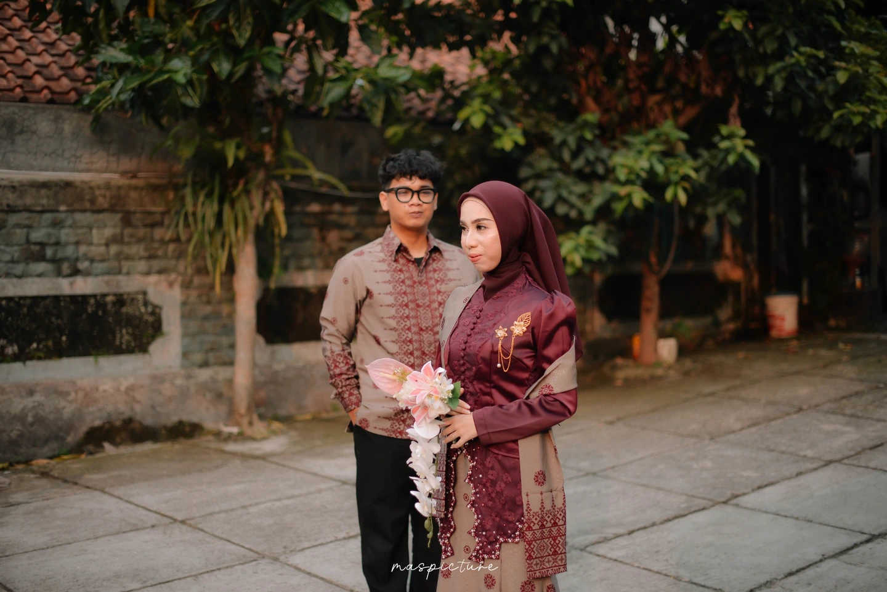
Foto 8 — Pasangan berdiri berdekatan membawa buket di halaman taman.
Delapan momen, satu cerita. Gulir untuk melihat semuanya.
Ketuk foto untuk melihat layar penuh.
Made of moments. Held with love.
07 / KINDLY REPLY
Your Presence
Means So Much
Mohon konfirmasikan kehadiran Anda dan tinggalkan doa terbaik untuk kami.
Doa & Ucapan
08 / WITH GRATITUDE
Tanda Kasih
Kirim Kado
09 / WITH LOVE, FOREVER
Wassalamu’alaikum Warahmatullahi Wabarakatuh
Kami yang berbahagia,
&
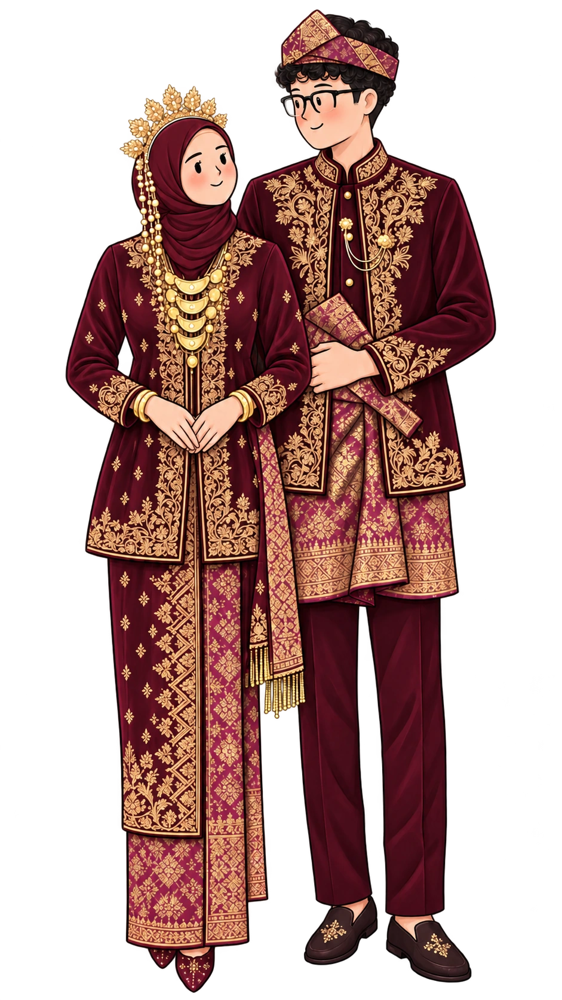
11 / THE END CREDITS
The End
Terima Kasih
telah hadir dalam cerita kami
F & A